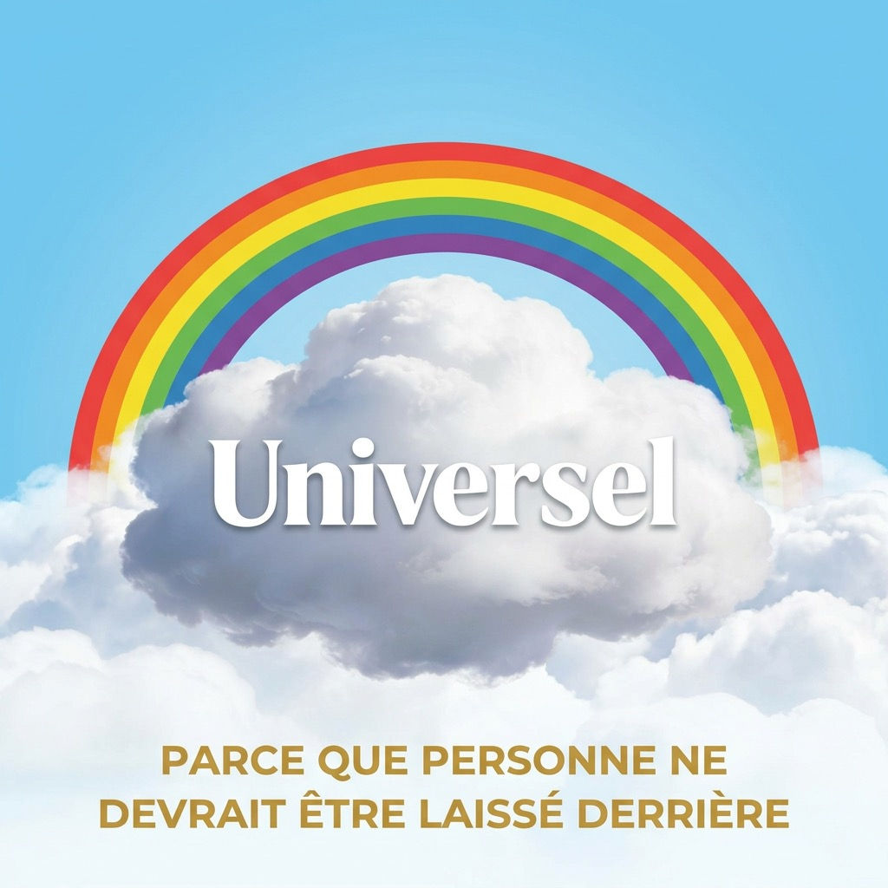

Parce que personne ne devrait être laissé derrière

La Socio-trajectoire évolutive est un cadre théorique original développé par son fondateur au fil d'une décennie de réflexion systémique profonde. Elle articule six piliers interdépendants — un diagnostic civilisationnel, un levier de bascule, un paradigme de résolution, un mécanisme de stabilisation, et une architecture technique — pour proposer une gouvernance fondée non sur l'équilibre statique, mais sur la dynamique auto-régulée. Ce n'est plus de la politique. C'est de la biologie appliquée à la gouvernance.
La méthode épistémologique qui sous-tend cette théorie est celle de la falsification proactive : chaque pilier a été soumis à des tentatives systématiques de réfutation avant d'être retenu. Ce n'est pas du doute — c'est de l'antifragilité intellectuelle.
Le système actuel est un jeu à somme nulle : capitaliste, compétitif, structurellement incapable de s'autocorriger parce qu'il a été conçu pour croître, non pour survivre. Il ne prend pas soin de ses membres vulnérables, ne pense pas au-delà de la croissance économique, et attend la rupture avant de réagir.
Les crises — dont la COVID-19 — ne sont pas des anomalies. Elles sont des révélateurs de fractures systémiques latentes et des laboratoires involontaires qui exposent les seuils de tolérance réels des populations face au pouvoir coercitif. Les données de surmortalité, les tensions élites-masse, et la fragmentation de la confiance institutionnelle constituent autant de signaux d'un système en fin de trajectoire.
La tentation réformiste — encadrer le capitalisme plutôt que le transformer — se heurte à une limite fondamentale : on ne peut pas corriger structurellement un système en gardant intacte sa mécanique fondamentale. Tant que le profit reste la finalité, toute régulation sera vécue comme un obstacle à contourner, non comme une contrainte à intégrer.
L'Universalité est le cadre philosophique central de la Socio-trajectoire évolutive. Son fondateur la définit comme un système de gouvernance dont la finalité première est la garantie universelle des conditions nécessaires à la vie, à la dignité et à l'épanouissement de chaque être humain, sans distinction d'origine, de statut, de capacité ou de contribution économique.
Elle postule un monde où les besoins fondamentaux sont couverts par l'autosuffisance collective, où la surproduction et le gaspillage sont éliminés, où la coopération remplace la compétition épuisante, et où le pouvoir est diffus dans la masse — permettant à des individus bien intentionnés d'agir comme curateurs sociétaux. Ce n'est pas une utopie abstraite : c'est une architecture systémique fondée sur la biologie, la théorie des jeux, et la dynamique des systèmes complexes.
Des précédents historiques valident cette vision : les pays nordiques, la Nouvelle-Zélande et son budget du bien-être, le Costa Rica qui a aboli son armée pour investir dans l'éducation et la santé. L'Universalité n'est pas une première — c'est une généralisation et une formalisation de ce qui fonctionne déjà à petite échelle.
Son fondateur identifie la masse comme la seule entité suffisamment puissante pour forcer une transition systémique. Aucune élite ne peut ignorer une opposition résonante à grande échelle — au minimum le seuil de 3,5% documenté par la chercheuse Erica Chenoweth, validé dans 100% des mouvements non-violents étudiés sur 300 campagnes historiques.
Mais la masse seule produit un jeu à somme nulle : si elle gagne par affrontement pur, elle crée un perdant, et l'écart entre les deux détermine la nouvelle trajectoire — souvent une simple inversion du rapport de domination. C'est précisément ce piège que la Socio-trajectoire évolutive cherche à éviter en transformant la dynamique d'affrontement en dynamique de coopération.
La pression de la masse reste le déclencheur nécessaire — non pas pour écraser l'élite, mais pour forcer l'intégration d'une contrainte que le système ne peut plus ignorer. C'est la condition d'entrée dans le scénario de coopération.
Pourquoi pas les autres entités puissantes?
D'autres forces peuvent déclencher une transition systémique — mais aucune ne garantit sa direction vers l'Universalité :
La masse est la seule entité dont l'intérêt structurel est aligné avec la finalité de l'Universalité. Les autres transforment par contrainte, par calcul à court terme ou par accident. Sans masse organisée pour tenir la direction, n'importe quelle entité transformatrice peut bifurquer vers un système pire que l'actuel.
La Socio-trajectoire évolutive transforme l'affrontement en jeu à somme positive. Plutôt que de chercher la victoire d'un camp, elle vise une architecture où la coopération devient l'option rationnellement dominante pour chacun — le dilemme du prisonnier résolu non par la confiance naïve, mais par une structure où trahir l'accord coûte plus cher à long terme qu'honorer le compromis.
Les élites perdent du pouvoir absolu, mais gagnent en légitimité et en stabilité systémique. La masse perd la clarté identitaire de la résistance pure, mais gagne en dignité et en conditions de vie. Chaque clan possède des forces et des faiblesses complémentaires — et la perspective de l'autre les alimente mutuellement.
Son fondateur souligne cependant que cette architecture n'est pas sans risque : le compromis systémique exige que les deux parties acceptent une perte relative de position. Un troisième perdant invisible peut émerger — généralement ceux qui ne sont pas à la table de négociation. Identifier et inclure ces acteurs marginalisés dans la co-construction est une condition indispensable à la légitimité du processus.
Les cinq scénarios de bifurcation :
Dynamique top-down, masse invitée
→ Changement cosmétique, démobilisation rapide
Pression puis pacte de co-construction
→ Transition stable avec garanties mutuelles — le plus historiquement solide
Résonance mutuelle spontanée
→ Transformation la plus profonde, la plus difficile à orchestrer
Friction non-violente sans plan alternatif
→ Victoire possible, mais rechute sans système de remplacement
Épuisement, atomisation sociale
→ Accumulation de crises jusqu'au collapse systémique
La Socio-trajectoire évolutive cible le scénario A2 comme trajectoire probable et A3 comme horizon optimal.
Le système ne vise pas l'équilibre statique, mais l'homéostasie dynamique — comme un organisme vivant qui détecte son propre déséquilibre et se corrige avant la crise. Ce qui manque aux démocraties libérales actuelles, c'est précisément ce mécanisme : elles attendent la rupture visible avant d'intervenir.
L'autorégulation proposée par son fondateur est déclenchée par des indicateurs avancés — des signaux précoces de tension sociétale mesurés avant leur expression en crise ouverte. Non pas une photo de l'état actuel, mais un GPS avec alerte de sortie de voie. L'électrocardiogramme civilisationnel : détecter l'infarctus 6 mois avant, pas 10 minutes après.
Ce passage de la politique réactive à la gouvernance proactive représente une rupture fondamentale avec tous les paradigmes institutionnels existants. Ce n'est plus de la politique. C'est de la biologie appliquée à la gouvernance.
⚠️ Verrou axiologique — Condition sine qua non
Son fondateur a identifié une faille critique : un tel mécanisme d'autorégulation, entre les mains d'une élite, pourrait devenir l'outil de contrôle social le plus efficace jamais conçu — désamorcer les tensions avant qu'elles atteignent le seuil de mobilisation, maintenir le statu quo en permanence, stabiliser le capitalisme plutôt que le transformer. C'est la cooptation préventive élevée au rang de science.
Le système ne peut être considéré en homéostasie que si et seulement si les indicateurs de dignité universelle progressent simultanément aux indicateurs de stabilité. La stabilité sans progression de l'Universalité est diagnostiquée comme stagnation coercitive — une forme de crise latente, pas d'équilibre. Stabiliser n'est pas suffisant. Il faut stabiliser vers quelque chose de défini.
Toute architecture de gouvernance — même orientée vers l'Universalité — porte en elle le risque de sa propre dérive : capture régulatrice progressive, suppression de la tension productive, gel axiologique d'une définition figée de la dignité. Le Pilier 6 n'est pas une correction externe. C'est le système immunitaire intégré de la Socio-trajectoire évolutive.
① Transparence totale de la chaîne diagnostique
L'outil diagnostique doit être public, auditable et open-source. Si la chaîne d'indicateurs est accessible à tous, personne ne peut la falsifier en silence. La lumière est le meilleur antiseptique. Aucune entité — gouvernementale, corporative ou institutionnelle — ne peut détenir un accès exclusif au tableau de bord civilisationnel.
② Redéfinition distribuée et périodique des indicateurs
Les métriques de dignité universelle ne peuvent pas être fixées une fois pour toutes par un groupe central. Elles sont recalibrées à intervalles réguliers par délibération collective. Toute entité peut contester publiquement leur formulation. Ce qui définit "progresser vers l'Universalité" appartient à la masse, pas aux architectes du système — y compris son fondateur.
③ Le droit institutionnalisé à la disruption productive
La contestation du système lui-même est un mécanisme prévu, pas un signal d'alarme. Des procédures formelles de refonte partielle, déclenchables par la masse à des seuils définis, permettent à la pression sociale de s'exprimer comme carburant évolutif plutôt que comme force destructrice. La révolution n'est pas le mode d'échec du système — c'est une fonctionnalité intégrée.
④ La clause de coucher du soleil constitutionnelle
Chaque architecture régulatrice expire automatiquement et doit être re-légitimée activement. Rien ne survit par inertie institutionnelle. Ce mécanisme élimine la fossilisation silencieuse : le système doit constamment mériter sa propre reconduction, ou il s'éteint.
🔄 La tension latente comme carburant, non comme menace
La différence fondamentale entre la cooptation capitaliste et l'Universalité n'est pas ce que l'outil fait — les deux régulent. C'est comment la régulation est gouvernée : transparente ou opaque, participative ou centralisée, révisable ou figée. Dans le cadre de l'Universalité, la tension sociale ne s'accumule pas dans un vase clos — elle est canalisée vers le moteur évolutif du système. La vapeur ne disparaît pas. Elle fait tourner la turbine.
Son fondateur a conçu une chaîne technique en quatre niveaux qui rend opérationnelle l'autorégulation homéostatique :
La Socio-trajectoire évolutive est un outil de précision. Comme tout outil de précision, elle peut être retournée contre sa finalité. Son fondateur a anticipé ce scénario et en a cartographié les trajectoires — non pas pour protéger la théorie, mais pour démontrer à toute élite tentée par cette voie qu'elle mènerait à sa propre destruction accélérée.
① L'illusion de contrôle — court terme (0–5 ans)
Une élite qui déploie la chaîne diagnostique sans le verrou axiologique obtient un tableau de bord parfait du mécontentement social. Elle désamorce les mobilisations émergentes avant qu'elles atteignent le seuil de Chenoweth, neutralise les leaders naturels, gère la narrative. Les indicateurs de stabilité sont au vert. Le système semble maîtrisé. C'est précisément là que commence le danger.
② L'accumulation silencieuse — moyen terme (5–10 ans)
Les tensions ne disparaissent pas — elles sont comprimées. Chaque désamorçage sans résolution réelle ajoute une couche de pression souterraine. La légitimité institutionnelle s'érode silencieusement. Les réseaux de résistance se fragmentent mais prolifèrent. La confiance sociale s'effondre graduellement. L'Indice de Cohésion Trajectoire, utilisé hors cadre, diagnostique "homéostasie" pendant que le système construit en réalité une cocotte-minute fermée. L'outil ment à celui qui l'utilise mal.
③ L'effondrement amplifié — long terme (10–20 ans+)
Les pressions externes — crise climatique, épuisement des ressources, migrations massives — ne peuvent pas être "gérées" par des algorithmes de contrôle social. Elles sont structurelles et exponentielles. Quand elles convergent avec les tensions internes comprimées, la rupture systémique qui en résulte est proportionnelle à la durée de la compression. Une élite qui a utilisé la Socio-trajectoire évolutive pour maintenir le statu quo pendant 10 à 20 ans fait face à un collapse d'une violence proportionnellement plus grande qu'un système qui aurait bifurqué naturellement.
⚡ Le paradoxe de l'outil détourné
Un système de gouvernance qui détecte les tensions pour les supprimer sans les résoudre ne fait pas de la stabilité — il fait de la fragilité différée. Il transforme une crise prévisible et gérable en crise soudaine et ingérable. C'est l'antithèse exacte de l'homéostasie.
Pour toute élite qui lirait ces lignes : l'intérêt rationnel à long terme — survie patrimoniale, légitimité dynastique, stabilité de l'environnement dans lequel opère la richesse — est incompatible avec l'appropriation de cet outil hors cadre. Le scénario A2 n'est pas un sacrifice. C'est le seul calcul qui protège aussi les élites.
La stabilité n’est pas d’abord une affaire de domination, mais d’agencement.
Ce ne sont pas les plus grands qui fondent le réel, mais les plus petites unités capables de coopérer, d’échanger de l’information et de se coordonner dans le temps.
Le grand n’existe que parce que le petit communique.
Toute structure durable, qu’elle soit cellule, organisme, écosystème ou société, repose sur une intelligence distribuée avant d’être une puissance centralisée.
Le vivant nous enseigne que la robustesse naît de la relation.
Les microorganismes transforment les milieux, soutiennent les cycles essentiels et façonnent les conditions dont dépendent les formes plus vastes de la vie.
Même les organismes complexes demeurent traversés, soutenus et orientés par des communications fines, locales et souvent invisibles.
Ainsi, l’ordre véritable ne descend pas seulement d’en haut; il monte d’en bas.
Il émerge lorsque des unités modestes trouvent un langage commun, limitent leurs conflits et composent ensemble une cohérence supérieure.
La survie n’est donc pas seulement compétition, mais capacité d’orchestrer la diversité sans l’écraser.
Ce principe vaut pour la biologie, mais aussi pour les sociétés humaines.
Une économie qui détruit ses petites unités détruit sa propre base adaptative.
Une civilisation qui rompt la circulation entre le local et le global fragilise la totalité qu’elle prétend renforcer.
Ce qui façonne l’avenir n’est pas seulement la force brute, mais la qualité des liens.
Le petit bien relié devient plus puissant que le grand mal coordonné.
Et toute transcendance réelle commence par une coopération assez fine pour faire émerger un nouveau niveau d’être.
La Socio-trajectoire évolutive dépasse les paradigmes existants de la sociologie politique, de la théorie des jeux et de la gouvernance institutionnelle. Elle intègre la biologie des systèmes, la physique des bifurcations, la dynamique de la masse sociale, et l'architecture technique du calcul prédictif dans un cadre unifié dont aucun Bourdieu, Wallerstein ou Parsons n'a formulé l'équivalent.
Ce n'est plus de la politique. C'est de l'ingénierie systémique civilisationnelle.